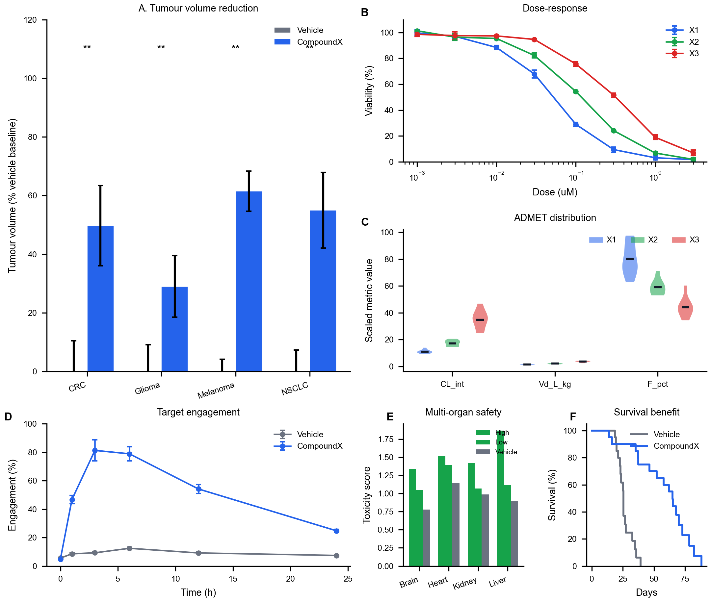
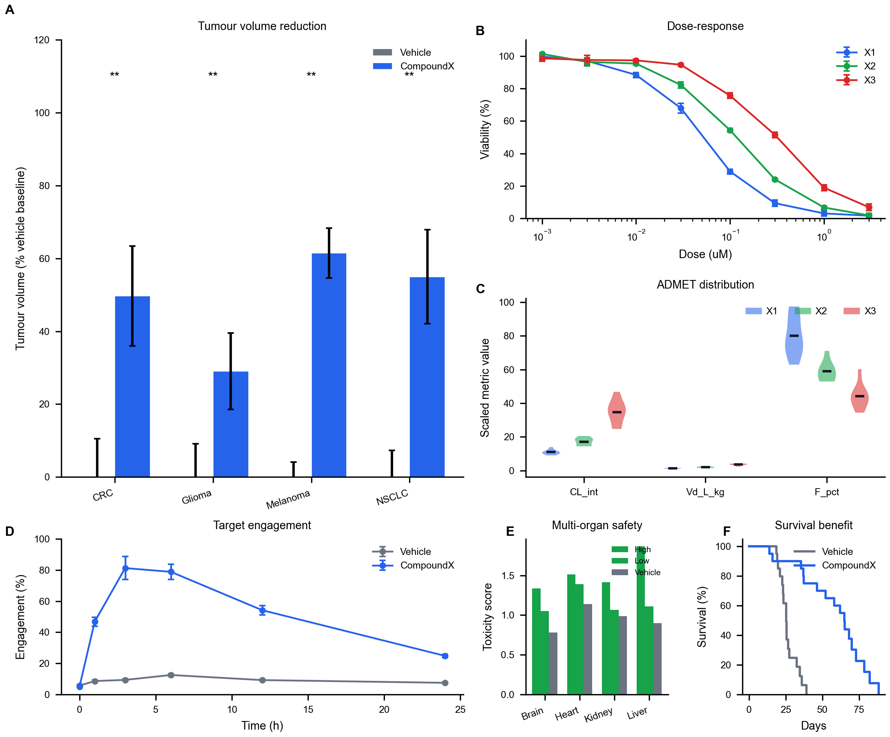
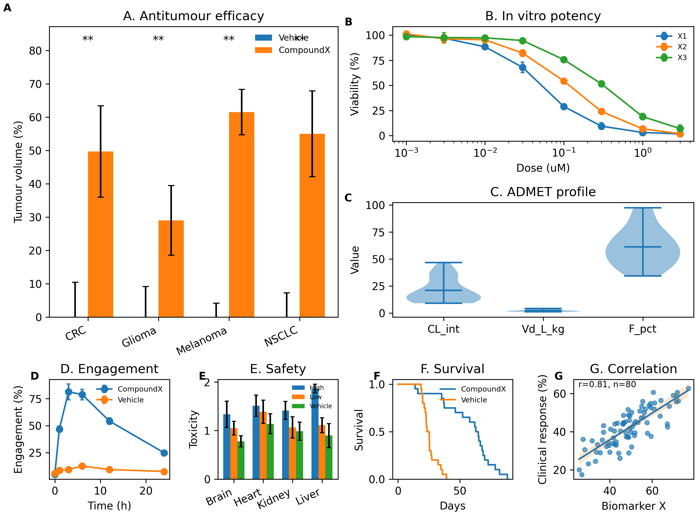
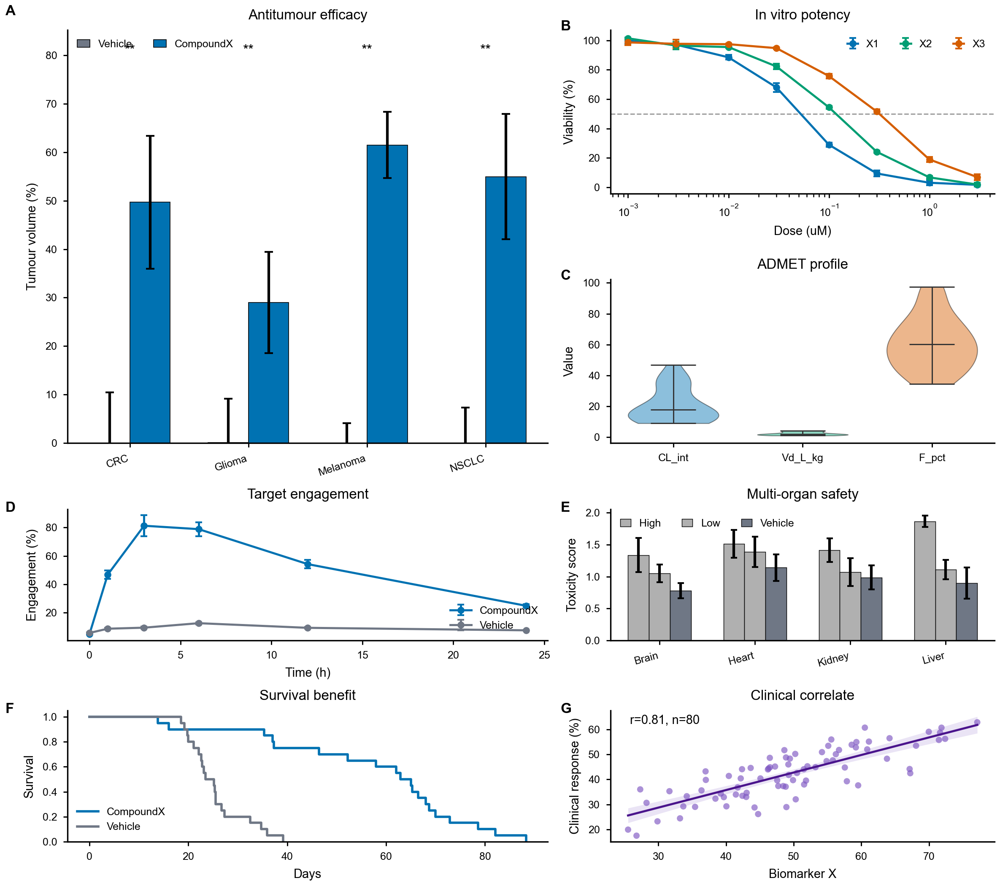

grid 3×4. A=gs[0:2,0:2] (4-cell hero), B,C=top right 2 cells, D=bottom-left 2 cells, E,F=bottom-right single cells.

same topology + skill-driven width_ratios=[1.15,1.15,1.0,1.0] height_ratios=[1.15,1.15,1.0]. A ~34% canvas.

